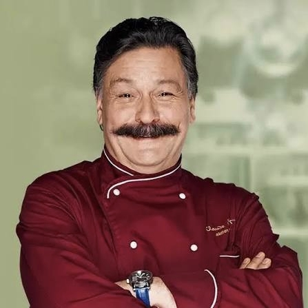
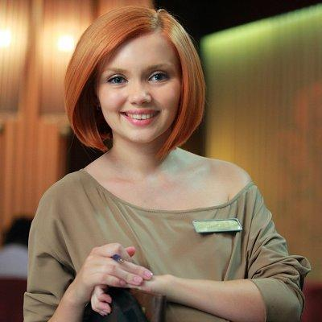
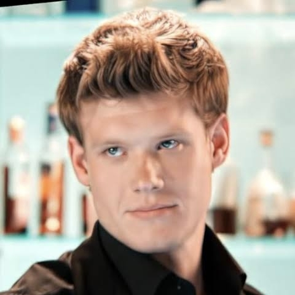
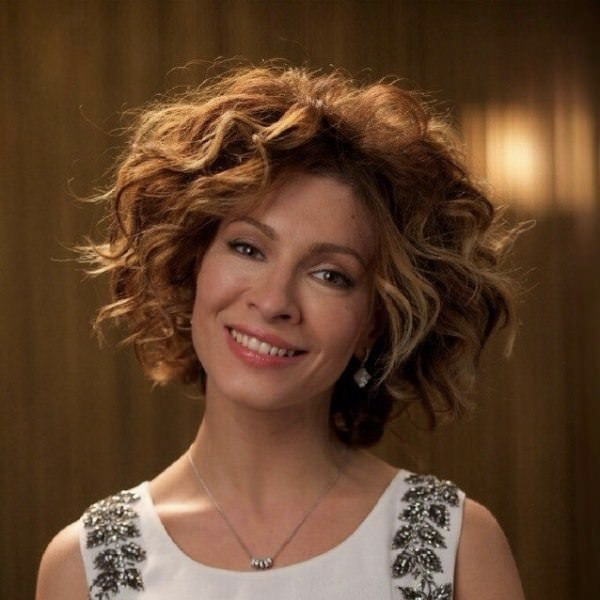
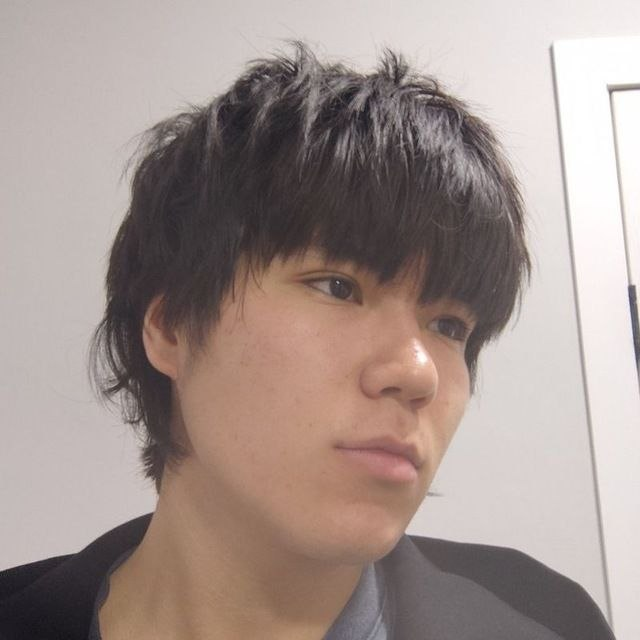
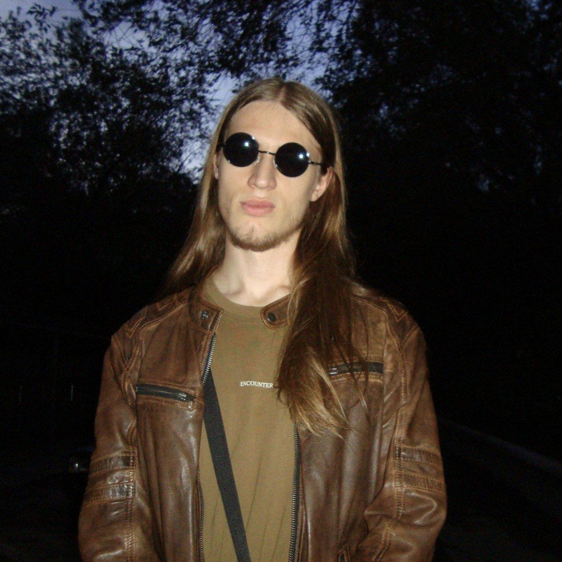

Виктор Баринов
Шеф-повар ресторана «Клод Моне» с более чем 12-летним стажем. Специализируется на французской и европейской кухне.
Ресторан «Клод Моне» приветствует вас! Мы всегда рады гостям и стремимся создать атмосферу уюта и комфорта. Наша команда профессионалов готова предложить вам лучшие блюда французской кухни, приготовленные с любовью и вниманием к деталям.
Адрес: г. Караганда, ул. Спиридоновка 25/20, строение 1
Телефон: +7 (727) 123-45-67
Email: info@monet-restaurant.kz
Понедельник - Пятница: 10:00 - 22:00
Суббота - Воскресенье: 12:00 - 00:00
Ресторан «Клод Моне» открылся в 2018 году как небольшое семейное заведение, посвящённое французской кухне и культуре хорошего ужина. Изначально ресторан задумывался как место, где можно не только поесть, но и провести несколько спокойных часов в приятной обстановке. Со временем меню стало более разнообразным, а ресторан получил постоянных гостей и расширил свою команду.
Сегодня «Клод Моне» сочетает традиционные французские рецепты с популярными блюдами европейской кухни. Мы стараемся сохранять первоначальную идею ресторана: качественные продукты, понятные блюда и внимательное обслуживание без лишней формальности.
Основу меню «Клод Моне» составляют блюда французской и европейской кухни, приготовленные из свежих продуктов. Мы делаем акцент на насыщенных вкусах, качественном мясе, сезонных продуктах и классических французских сочетаниях.
Для начала можно попробовать тартар из говядины с каперсами — нежную мелко нарезанную говядину с пикантными каперсами и лёгкими приправами. Любителям морепродуктов предлагаем улиток в чесночном соусе с ароматным сливочным вкусом и свежей зеленью.
Среди основных блюд особенно выделяется утиная грудка с апельсиновым соусом. Нежное мясо утки сочетается с лёгкой цитрусовой кислинкой и сладостью апельсинового соуса. Также в меню есть ризотто с белыми грибами — кремовое блюдо с насыщенным грибным ароматом, приготовленное из риса и белых грибов.
Завершить ужин можно классическим французским десертом — крем-брюле с ванилью. Нежный ванильный крем сочетается с тонкой хрустящей карамельной корочкой, которую мы готовим непосредственно перед подачей.
Мы стараемся сохранять традиционный характер блюд, но при этом уделяем внимание современной подаче и деталям приготовления. Меню может дополняться сезонными позициями в зависимости от доступности свежих продуктов.
Интерьер «Клод Моне» выполнен в спокойном классическом стиле с элементами французского дизайна. В зале используются тёплое освещение, деревянные поверхности, мягкая мебель и декоративные картины. Большое внимание уделено освещению и расположению столов, поэтому в ресторане достаточно комфортно как для небольшого семейного ужина, так и для встречи с друзьями.
Днём в ресторане царит более спокойная и светлая атмосфера, а вечером приглушённое освещение делает обстановку более уютной. Музыка остаётся достаточно тихой, чтобы гости могли спокойно разговаривать друг с другом.
Наш шеф-повар Виктор Баринов работает в ресторанной сфере более 12 лет. Он начал карьеру помощником повара и постепенно прошёл путь до руководителя кухни. За время работы Виктор специализировался на французской и европейской кухне, а также работал над созданием сезонных меню.
Сегодня он отвечает за работу кухни, качество продуктов и соблюдение рецептур. Виктор лично контролирует приготовление основных блюд и регулярно обновляет меню, добавляя новые позиции. В своей работе он придерживается простого принципа: хорошее блюдо не должно быть сложным ради сложности, его главная задача — быть вкусным, свежим и хорошо приготовленным.
Шеф-повар ресторана «Клод Моне» с более чем 12-летним стажем. Специализируется на французской и европейской кухне.

Сервисный персонал. Отвечает за обслуживание гостей и обеспечение комфортного пребывания в ресторане.

Бармен. Отвечает за приготовление коктейлей и обслуживание гостей в баре.

Администратор ресторана. Отвечает за общее управление и координацию работы персонала.

Разработчик. Отвечает за разработку и поддержку веб-сайта ресторана.

Разработчик. Студент группы SE-2514, Astana IT University. Отвечает за разработку и поддержку веб-сайта ресторана. Разработал страницы "О нас" и "Вакансии".

Загляните к нам на ужин, попробуйте блюда из нашего меню и проведите вечер в уютной атмосфере. Мы ждём вас каждый день и постараемся сделать ваш визит приятным!